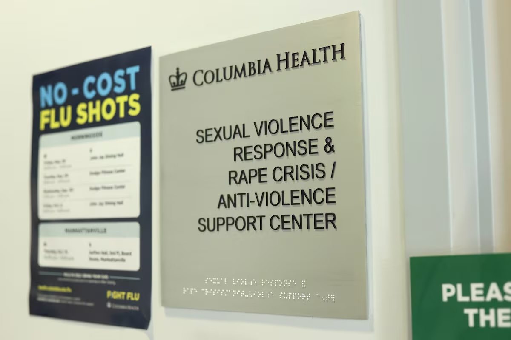

In the wake of the Cornell Seven rape case, all eyes are on New York campus sexual assault.
The 2015 "Enough is Enough" law mandated that New York universities take a uniform approach to reporting sexual violence. The most recent data was from 2024. Similar to previous years, the report illustrated a trend of New York private colleges facing more sexual violence than CUNY colleges do. CUNY colleges are commuter schools with few students living on or near campus, but the difference is still stark.
Sexual violence researcher Nicole Bedera pointed out that this statewide survey is much more accurate than the data published in colleges' annual security reports. She wrote in an email, "there are huge variations in how schools collect and report that data. I know some schools report any student who sought services for sexual assault, while others report only stranger-perpetrated violence in public places on campus."